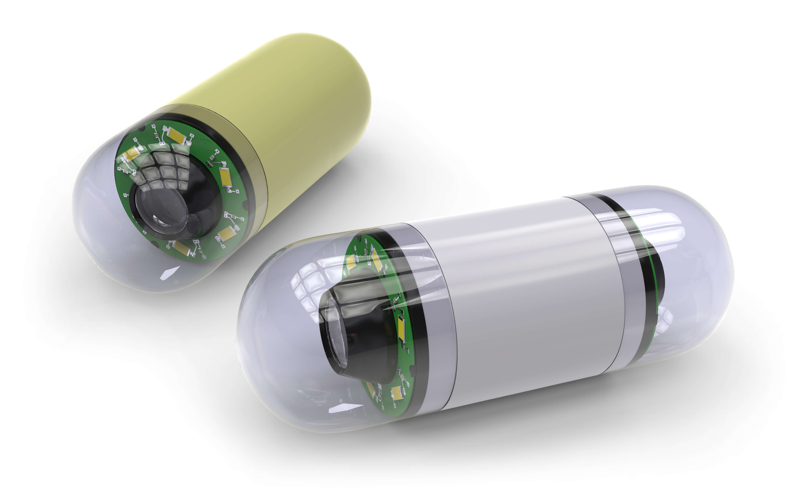

A View on the Inside
Endoscopy Care for Nurses
Evolution of Endoscopy
‘All disease begins in the gut,’ as believed by the ancient Greek physician Hippocrates (Lyon, 2018).
Gastrointestinal (GI) disorders have caused human suffering since time immemorial. Nearly 2,000 years ago, Hippocrates documented the symptoms associated with GI (gastrointestinal) conditions such as dysentery, bowel obstruction, and liver disease.
William Beaumont was the father of American physiology and gastroenterology who also documented GI symptoms (Skroska, n.d.). However, both Beaumont and Hippocrates had to rely on the patient’s symptoms to make a diagnosis.
Throughout this course, you will explore the inner workings of endoscopic procedures of the upper and lower GI tract, as well as the evolution of endoscopic technologies. We will discuss the role and expectations of the endoscopy nurse before, during, and after an endoscopic procedure. The common indications, contraindications, and complications of endoscopic procedures will also be reviewed.
A Timeline of Invention
Scroll down the page to read the content.
- 1795- First documented use of a sigmoidoscope, a device used to examine the sigmoid colon through the rectum, was by Bozzini.
- 1868- Kussmaul observed the stomach through a rigid gastroscope.
- 1932- Schindler engineered the first semi-flexible endoscope.
- 1957- A new, simple, and easy-to-use fiberoptic gastroscope was developed that produced high-quality images, revolutionizing gastroenterology.
- 2000 - Wireless endoscopic technology was introduced.
(Leung & Gelrud, 2014)
Over the last several decades, many advances in fiberoptic technology have led to more useful instruments. These new and improved endoscopic tools have made it possible for healthcare providers to make accurate diagnoses of upper and lower GI diseases without surgery (Feussner et al., 2015).

Looking Forward
Technology has redefined the specialty of gastroenterology and endoscopy. The progression from fiberoptic to video endoscopes revolutionized the field. We are entering yet another new age in the field of GI endoscopy. The emergence and refinement of new techniques and technologies make scope manipulation easier and thus allow for a more efficient and safe passage through the GI tract. Modern technologies provide:
Technology has redefined the specialty of gastroenterology and endoscopy. The progression from fiberoptic to video endoscopes revolutionized the field. We are entering yet another new age in the field of GI endoscopy. The emergence and refinement of new techniques and technologies make scope manipulation easier and thus allow for a more efficient and safe passage through the GI tract. Modern technologies provide:
- Advanced imaging techniques
- Higher endoscopic magnification capabilities
- Advanced nanotechnology
- Enhanced and technologically efficient endoscopes
One emerging technique is disposable endoscopy, which not only allows for an endoscope to be used on a single-patient basis, but can also potentially reduce the risk of hospital-acquired infection (Baeg et al., 2016). Other technologies increasing in popularity are optical polarization, optical phase, and hyperspectral endoscopy, which records images at many different wavelengths (Qi & Elson, 2016).
Augmented reality is under discussion, a technique that can be combined with other imaging sources to ascertain the position of an endoscopic structure or tumor more accurately (Mahmud et al., 2015). Procedures are already in place that can act as endoscopic alternatives to bariatric surgeries, or others that allow for the removal of polyps invading deeply into the mucosal and submucosal linings of the colon wall (Choi & Chun, 2017; Maple et al., 2015).
The future looks exciting and may be full of marvels. What we can be sure of, however, is that we can look forward to greater patient satisfaction and enhanced patient outcomes.
The Hidden Depths

The small intestine, which comprises a large portion of the GI tract, lies nestled between its upper and lower extremities. As its length makes it largely prohibitive to visualization with a flexible endoscope, capsule endoscopy provides an accessible means of evaluation of the heretofore hidden recesses of the small bowel; the duodenum, the jejunum, and the ileum.
A pill-sized camera travels down the length of the GI tract, recording images along its route. The camera collects data that can provide potential explanations for GI bleeding, the most common reason that this examination is performed. It can also be used to detect these conditions of the small bowel:
- Ulcers
- Tumors
- Polyps
- Inflammatory bowel disease
The Scope of Endoscopy
Endoscopes allow healthcare providers to visualize detailed images of otherwise unreachable portions of the GI tract in a minimally invasive manner. They are introduced through natural body orifices, such as the mouth and the anus, eliminating the need for large incisions and long recovery periods. Quick and relatively safe procedures to perform, endoscopies can eliminate the need for more invasive modes of care and treatment.
The goals of endoscopic procedures are to diagnose and treat abnormalities of the internal structures of the body. They are minimally invasive and often used to evaluate symptoms of GI dysfunction. Endoscopies can also treat diseases that have been diagnosed via biopsy and occur in various portions of the GI tract including the:
- Esophagus
- Stomach
- Small bowel
- Large intestine
- Rectum
Modern Endoscope

The modern endoscope consists of a rigid or flexible tube, a light source, a lens system, an eyepiece, a control head, and an additional channel, which allows for the insertion of medical equipment to be passed through the endoscope.
- The light source directs light internally via an optical fiber system.
- The control head controls scope maneuverability in all directions, and it contains valves that regulate air, water, and suction.
- The suction/biopsy channel permits the use of accessories like biopsy forceps or cytology brushes.
Contraindications
Some contraindications to endoscopies are (Bhagatwala et al., 2015; Cohen & Greenwald, 2023; Gotfried, 2023):
Some contraindications to endoscopies are (Bhagatwala et al., 2015; Cohen & Greenwald, 2023; Gotfried, 2023):
Select the arrows to learn more.
Contraindications include existing coagulopathies and current anticoagulant medication use. The risk of an embolic event occurring when anticoagulation is interrupted for 4 to 7 days is about 1%, although such an interruption must be considered on an individual basis, as it is not always possible to discontinue anticoagulation (Acosta et al., 2016). However, anticoagulation should be discontinued for procedures that present a high risk for bleeding, such as:
- Endoscopic mucosal resection
- Ampullary resection
- Banding of esophageal varices
Carefully consider the patient with severe cervical arthritis or severely altered head and neck anatomy related to prior surgery, radiation, or tumor overgrowth, as this may result in airway issues that would preclude the safe administration of anesthesia to the patient.
Pre-Procedure
Although standards of care vary between institutions, the American Society for Gastrointestinal Endoscopy (ASGE) recommends certain basic protocols before an endoscopy, including the availability of (Early et al., 2018):
- Adequately trained staff
- Functional up-to-date equipment
- A cleaning area separate from the endoscopy suite
- Personnel who are adequately trained to intervene in the event of an emergency

Before sedation, a medical history is taken, and a pre-sedation assessment is conducted to identify any underlying conditions that increase the risk. The American Society of Anesthesiologists (ASA) classification is used to identify risks of unplanned cardiopulmonary events during sedation while the Mallampati Classification helps to identify potential airway difficulties. An anesthesia clinician is consulted for patients with certain characteristics and according to facility policy.
NPO Status
Due to the risk of aspiration, patients are generally advised to remain NPO for 8 hours before endoscopy procedure (Odom-Forren, 2018). Guidelines vary between institutions on the amount and timing of clear liquids allowed immediately before the procedure and range from nothing after midnight to clear liquids up to 2 hours before a procedure (American Society of Anesthesiologists, 2017).
Due to the risk of aspiration, patients are generally advised to remain NPO for 8 hours before endoscopy procedure (Odom-Forren, 2018). Guidelines vary between institutions on the amount and timing of clear liquids allowed immediately before the procedure and range from nothing after midnight to clear liquids up to 2 hours before a procedure (American Society of Anesthesiologists, 2017).
In cases where gastric emptying is impaired, or in emergency situations, a team approach should be used to minimize the patient's aspiration risk.
Laboratory Studies
The physician is notified of any abnormalities in the patient’s pre-procedural assessment. Testing may be ordered, such as (Cohen & Greenwald, 2023):
The physician is notified of any abnormalities in the patient’s pre-procedural assessment. Testing may be ordered, such as (Cohen & Greenwald, 2023):
- Urinalysis
- Serum glucose
- Basic metabolic panel
- Complete blood count
- Coagulation studies
- Blood type and screen
- Imaging and radiography
- Pregnancy test (females of childbearing age)
Antibiotic Prophylaxis
Antibiotic prophylaxis is no longer recommended for preventing infective endocarditis during endoscopic procedures (Meyer, 2023). However, high-risk cardiac patients or those with ongoing infections may require an antibiotic regimen that includes an agent active against enterococci (e.g., ampicillin, piperacillin-tazobactam, or vancomycin). Low-risk endoscopic procedures usually do not require routine prophylaxis. No additional prophylaxis is required for patients with cholangitis, only antibiotic therapy for treatment.
Antibiotic prophylaxis is no longer recommended for preventing infective endocarditis during endoscopic procedures (Meyer, 2023). However, high-risk cardiac patients or those with ongoing infections may require an antibiotic regimen that includes an agent active against enterococci (e.g., ampicillin, piperacillin-tazobactam, or vancomycin). Low-risk endoscopic procedures usually do not require routine prophylaxis. No additional prophylaxis is required for patients with cholangitis, only antibiotic therapy for treatment.
Additional circumstances that may require antibiotic prophylaxis include (Cohen & Greenwald, 2023):
- Endoscopy for GI bleed evaluation in patients with cirrhosis
- Placement of feeding tubes
- Procedures with elevated risk of bacteremia (e.g., endoscopic sclerotherapy, dilation of esophageal strictures) in patients with advanced neutropenia or hematologic malignancies
Knowledge Check
Flag/Unflag this Question
In which situation should you notify the physician?
Contraindications include existing coagulopathies and current anticoagulant medication use. Anticoagulation should be discontinued for procedures that present a high risk for bleeding, such as endoscopic mucosal resection, ampullary resection, and banding of esophageal varices. The other patients have adequately prepared for their procedure.
Contraindications include existing coagulopathies and current anticoagulant medication use. Anticoagulation should be discontinued for procedures that present a high risk for bleeding, such as endoscopic mucosal resection, ampullary resection, and banding of esophageal varices. The other patients have adequately prepared for their procedure.
Incorrect, try again
Key Takeaways
- Advancements in technology have made endoscopy safer and more effective, including disposable endoscopes and new imaging techniques.
- Before sedation, a medical history is taken and a pre-sedation assessment is conducted to identify any underlying conditions that increase the risk.
- Patients are advised to fast for 8 hours before surgery to avoid aspiration risk, although guidelines for clear liquid intake vary by institution.
- Antibiotic prophylaxis is typically not recommended for endoscopic procedures, except for high-risk cardiac patients or those with ongoing infections.